Ecuaciones de la recta
Un vector director de una recta es cualquier vector con la misma dirección que ella.
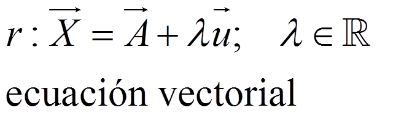
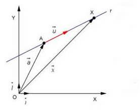
En coordenadas:
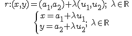ecuaciones paremétricas
Si despejamos λ:
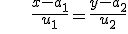 ecuación continua
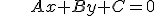 ecuación general o implícita
La pendiente de una recta, m, es la tangente del ángulo que forma la recta con el eje de abscisas: m = tg α
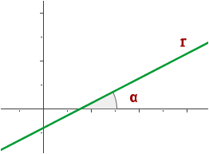
Se ve que:
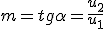
|
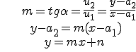 |
ecuación de punto-pendiente ecuación explícita |
NOTA:
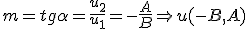
|
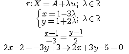 |
ecuación vectorial ecuaciones paramétricas ecuación continua ecuación general o implícita |
|
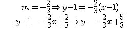 |
ecuación de punto-pendiente ecuación explícita |
Ejercicios
1.- Encuentra todas las ecuaciones de la recta que pasa por el punto (3,-1) y tiene la dirección del vector (-1,1).
2.- Encuentra las otras ecuaciones de la recta r: y = 3x + 2
Soluciones:
1.-
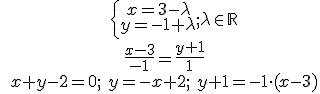
2.-
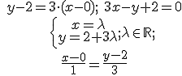
Obra publicada con Licencia Creative Commons Reconocimiento No comercial Compartir igual 4.0